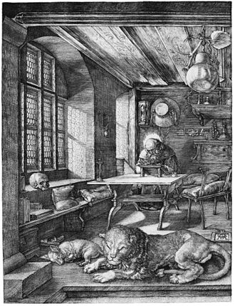

For the music album by Forest Swords, see Engravings (album).
"Engrave" redirects here. For the album by Amulet, see Engrave (album).
Engraving is the practice of incising a design onto a hard, usually flat surface by cutting grooves into it with a burin. The result may be a decorated object in itself, as when silver, gold, steel, or glass are engraved, or may provide an intaglio printing plate, of copper or another metal, for printing images on paper as prints or illustrations; these images are also called "engravings". Engraving is one of the oldest and most important techniques in printmaking. Wood engraving is a form of relief printing and is not covered in this article.
Engraving was a historically important method of producing images on paper in artistic printmaking, in mapmaking, and also for commercial reproductions and illustrations for books and magazines. It has long been replaced by various photographic processes in its commercial applications and, partly because of the difficulty of learning the technique, is much less common in printmaking, where it has been largely replaced by etching and other techniques.
"Engraving" is also loosely but incorrectly used for any old black and white print; it requires a degree of expertise to distinguish engravings from prints using other techniques such as etching in particular, but also mezzotint and other techniques. Many old master prints also combine techniques on the same plate, further confusing matters. Line engraving and steel engraving cover use for reproductive prints, illustrations in books and magazines, and similar uses, mostly in the 19th century, and often not actually using engraving. Traditional engraving, by burin or with the use of machines, continues to be practised by goldsmiths, glass engravers, gunsmiths and others, while modern industrial techniques such as photoengraving and laser engraving have many important applications. Engraved gems were an important art in the ancient world, revived at the Renaissance, although the term traditionally covers relief as well as intaglio carvings, and is essentially a branch of sculpture rather than engraving, as drills were the usual tools.